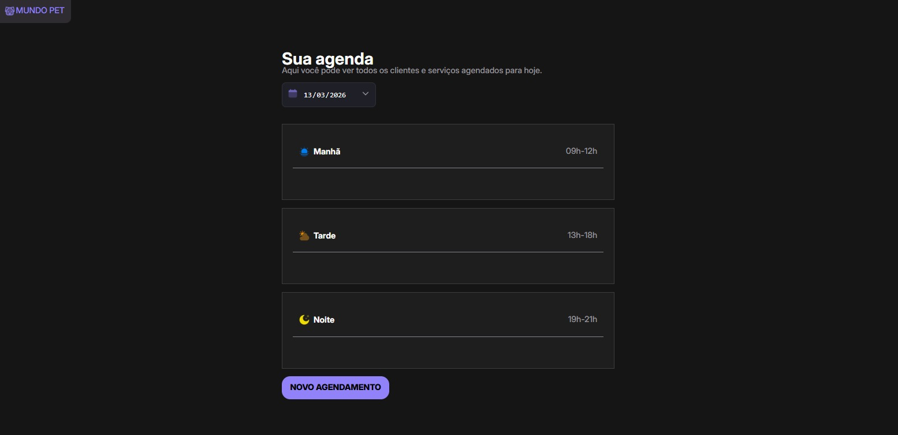
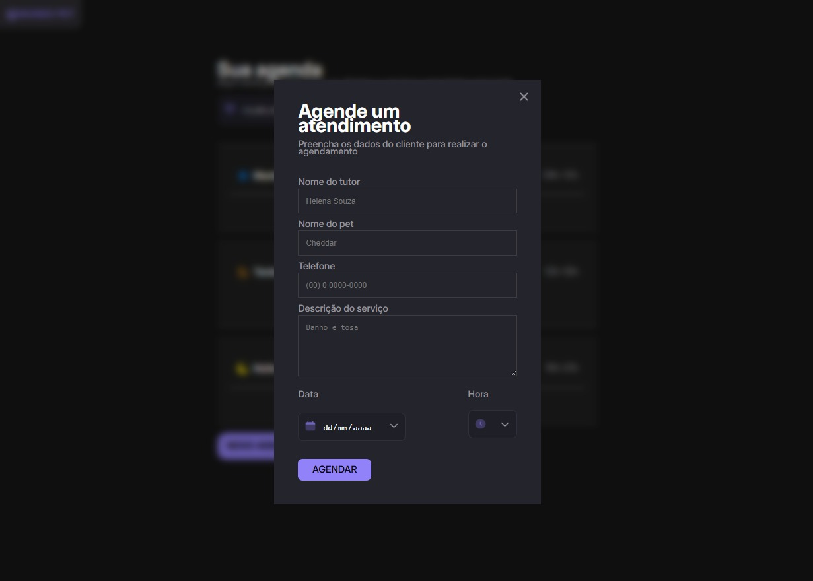
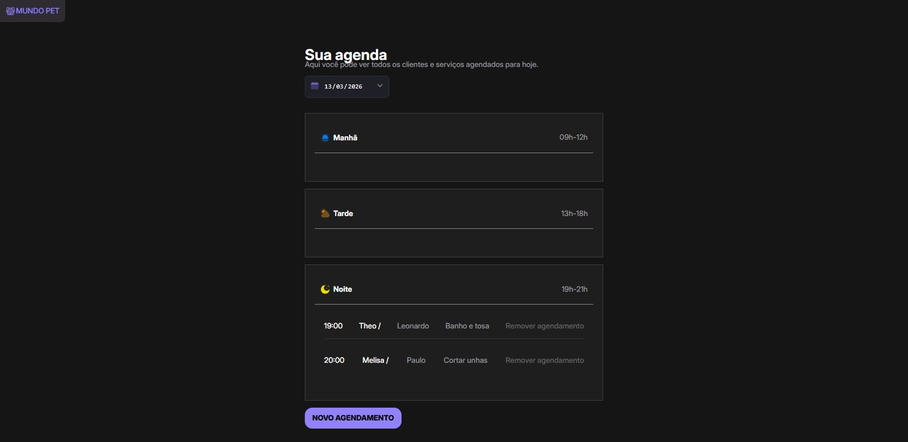

Agendamento de petshop
Contexto
Este projeto foi desenvolvido como parte de um desafio prático, com o objetivo de criar um sistema de agendamento para um petshop. A proposta era simular um caso real de uso, onde clientes poderiam marcar horários para serviços como banho, tosa e consultas veterinárias. Diferente dos projetos front-end, aqui o foco foi trabalhar com Node.js e compreender melhor o funcionamento de uma aplicação completa, integrando backend e frontend. O sistema conta com uma API local responsável por gerenciar os dados de agendamento, e uma aplicação que consome essa API para exibir e manipular as informações. Para rodar, é necessário iniciar o servidor com npm run server e a aplicação com npm run dev. Essa estrutura reflete o ciclo real de desenvolvimento de sistemas, aproximando-se de cenários corporativos.
Desafio
O desafio principal era:
- Criar uma aplicação que permitisse cadastrar e gerenciar agendamentos.
- Estruturar o backend em Node.js, garantindo organização e escalabilidade.
- Simular persistência de dados e fluxo de agendamento em ambiente local.
Solução
A solução foi implementada utilizando:
- Node.js: Para construção do servidor e gerenciamento das rotas.
- JavaScript: Lógica de negócio e manipulação dos dados.
- JSON Server: Para simular uma API local e persistência de dados.
- HTML e CSS: Interface simples e funcional para interação com o usuário.
Resultado
O sistema funciona localmente e demonstra minha capacidade de criar aplicações completas com backend em Node.js. Ele permite:
- Cadastrar novos agendamentos.
- Listar e gerenciar horários disponíveis.
- Simular fluxo de atendimento em um petshop.
Como executar localmente
- Clone o repositório do projeto:
git clone https://github.com/soarezzgzs/agendamento-petshop.git - Instale as dependências:
npm install - Inicie a API local:
npm run server - Inicie a aplicação local:
npm run dev - Abra o navegador e navegue para
http://localhost:3000
Aprendizados
- Estruturação de projetos em Node.js.
- Criação de rotas e manipulação de dados no backend.
- Integração entre frontend e backend em ambiente local.
Capturas de Tela
Abaixo estão algumas capturas de tela do projeto em funcionamento:


